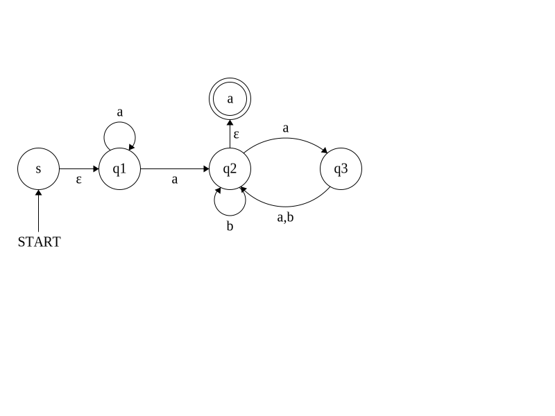
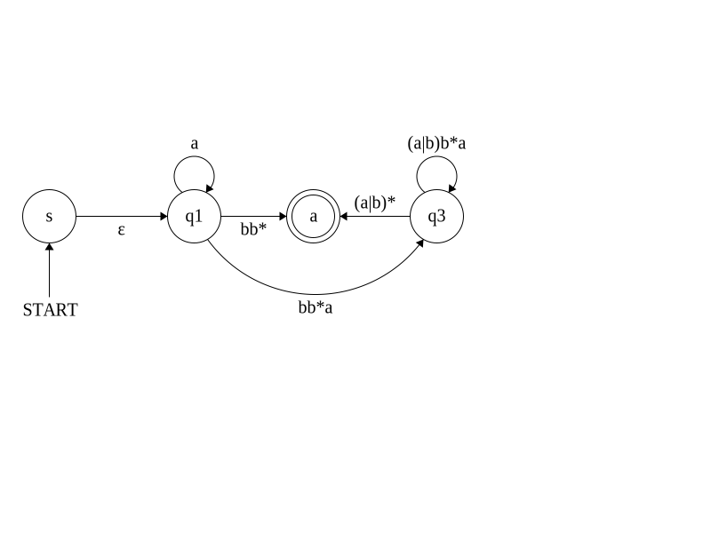
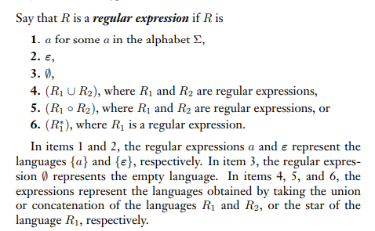

Problem 1: Interpret the following regular expression: (\(0 \cup 1\))\(0^{*}\)
How: break down/interpret each operation
- Union: \(0 \cup 1\)
- Star Closure: \(0^{*}\)
- Concatenation: (\(0 \cup 1\))\(0^{*}\)
Final Answer:
The regular expression is a set of strings that are either 0 or 1 followed by 0's.
Problem 2: For \(\sum = \{a,b\}\), Interpret the following regular expressions
Here's a review on Syntax and Operations for Reference
- \( a^{*} \)
- We have star closure applied to a, therefore we have 0 or more a's
- the term 0, given that we're working with strings, can be represented as \(\epsilon\)
- Therefore, we can say that \( a^{*} = \{ \epsilon, a, aa, aaa, aaaa, ... \} \)
- \( ba^{*} \)
- We have concatenation of b and a's, therefore we have b followed by 0 or more a's
- Therefore, we can say that \( ba^{*} = \{ b, ba, baa, baaa, ... \} \)
- \( a^{*} ba^{*} \)
- We have concatenation of \(a^{*}\), b, and \(a^{*}\), therefore we have 0 or more a's followed by b followed by 0 or more a's
- Therefore, we can say that \( a^{*} ba^{*} = \{ \epsilon b \epsilon, \epsilon b a, \epsilon b aa, \epsilon b aaa, ... , a b \epsilon, a b a, a b aa, a b aaa, ... , aa b \epsilon, aa b a, aa b aa, aa b aaa, ... , aaa b \epsilon, aaa b a, aaa b aa, aaa b aaa, ... \} \)
- To condense this, we can also say that \( a^{*} ba^{*} \) = any string over \(\sum\) containing exactly one b (given that \(\
\sum\) is comprised of only a's and b's)
- \( \Sigma^{*} b \Sigma^{*} \)
- We have concatenation of any string over \(\sum^{*}\), b, and any string over \(\sum^{*}\)
- In other words, you can have any string (including empty) before a b and any string (including empty) after a b.
- Therefore, \( \Sigma^{*} b \Sigma^{*} \) = any string over \(\sum\) containing at least one b.
- \( \Sigma^{*} aab \Sigma^{*} \)
- Using past expressions as reference, we can say that \( \Sigma^{*} aab \Sigma^{*} \) = any string over \(\sum\) containing substring aab
- \( a^{*} (baa^{*})^{*} \)
- We have concatenation of \( a^{*}\) and (\(baa^{*})^{*}\)
- Therefore we have 0 or more a's, followed by 0 or more \(baa^{*}\)
- We see here that any time there is a b in the string, it will always be followed by an a due the applied star closure of that last a in \(ba\)\(a^{*}\)
- Therefore, we can say that \( a^{*} (baa^{*})^{*} \) = Any string over \(\sum\) where b is always followed by an a.
- \( (\Sigma \Sigma)^{*} \)
- This expression either generates no symbols or a pair of symbols from the alphabet.
- Therefore we can say that \( (\Sigma \Sigma)^{*} \) = any string over \(\sum\) with even length
- \( \Sigma (\Sigma \Sigma)^{*} \)
- This expression generates at least one symbol from the alphabet followed by 0 or more pairs of symbols from the alphabet.
- In other words, it will always generate a string of an odd length
- Therefore, we can say that \( \Sigma (\Sigma \Sigma)^{*} \) = Any string over \(\sum\) with an odd length
- \( (\Sigma \Sigma \Sigma)^{*} \)
- This expression generates 0 or more triplets of symbols from the alphabet
- Therefore, we can say that \( (\Sigma \Sigma \Sigma)^{*} \) = Any string over \(\sum\) that is divisible by 3
- \( \emptyset a^{*} \)
- This expression represents the concatenation of the empty set with the Kleene star of \( a \).
- By dominion law, any concatenation with the empty set results in the empty set.
- Therefore, \( \emptyset a^{*} = \emptyset \).
- \( a^{*} \varepsilon \)
- \( a^{*} \) represents the set of all strings formed by concatenating zero or more occurrences of \( a \).
- \( \varepsilon \) is the empty string, which acts as an identity in concatenation.
- Thus, \( a^{*} \varepsilon = a^{*} \).
- \( a^{*} \cup \emptyset \)
- The union of \( a^{*} \) and the empty set includes all elements in \( a^{*} \) plus the empty set (which contributes nothing).
- Since \( a^{*} \) already contains the empty string, adding \( \emptyset \) has no effect.
- Thus, \( a^{*} \cup \emptyset = a^{*} \).
- \( \emptyset^{*} \)
- The Kleene star of the empty set represents all possible concatenations of elements from \( \emptyset \).
- Since \( \emptyset \) contains no elements, the only valid string is the empty string \( \varepsilon \).
- Thus, \( \emptyset^{*} = \{ \varepsilon \} \).
Problem 3: Convert the following DFA into a GFNA
Here's a review on GNFAs for Reference
Step 1: Determine start and accept states
- Starting state s will come before \(q_{1}\) (old start state) with a \(\epsilon\) transition in between them
- accepting state a will be above \(q_{2}\) (old accept state) with a \(\epsilon\) transition in between

Step 2: Choose a state to rip and construct the ripping table
- It's best to rip the state with the most transitions, so we will rip \(q_{2}\) (\(q_{2}\) will be our r)
- There are four transitions coming in and out of \(q_{2}\) (excluding self loops). This will be the amount of rows in the ripping table
- Self-loops will contain a star closure and transitions with two or more symbols will contain a "\(\mid\)" between them in the table
Now we'll construct the ripping table:
Remember Identity Laws for this one
| a |
r |
b |
\(R_{ar}\) |
\(R_{r}\) |
\(R_{rb}\) |
\(R_{ab}\) |
\( (R_{ar})(R_{r})^{*}(R_{rb})\mid(R_{ab})\) |
Reduced |
| 1 |
2 |
3 |
b |
b |
a |
∅ |
(b)(b)* (a) | (∅) |
bb*a |
| 1 |
2 |
a |
b |
b |
ε |
∅ |
(b)(b)* (ε) | (∅) |
bb* |
| 3 |
2 |
3 |
a|b |
b |
a |
∅ |
(a|b)(b)* (a) | (∅) |
(a|b)b*a |
| 3 |
2 |
a |
a|b |
b |
ε |
∅ |
(a|b)(b)* (ε) | (∅) |
(a|b)b* |
Step 3: Repair the machine
- We will now replace the old transitions with the new regex transitions
- Given our table, our set of states are as follows: \( \{a,b\} \) = states \(1, 3, a\)
- Construct GNFA with those states and their respective reduced regex transitions

×
Regular Expressions (based on problem)
- In this context, we can say that regular expressions are regular language operations (like union, star closure, etc) applied on inputs (either numerical or letters) that make up a string that a machine accepts.
Formal Definition of a Regular Expression

×
Union
- In this context, we can say that the union operation is a set of strings that are either 0 or 1.
×
Star Closure
- In this context, we can say that the star closure operation is a set of strings that are either 0 or more 0's.
×
Concatenation
- In this context, we can say that the concatenation operation is a set of strings that is the union of 0 and 1, followed by 0's.
×
Syntax
- A symbol to represent the language containing the string consisting of itself
- \( (a \cup b) \) to represent either of symbols \( a \) or \( b \)
- \( a \circ b \) or just \( ab \) to represent symbol \( a \) concatenated with symbol \( b \)
- \( \Sigma \) to represent any symbol from \( \Sigma \)
- \( a^{*} \) to represent zero or more occurrences of \( a \)
- \( \Sigma^{*} \) to represent zero or more occurrences of any symbol from \( \Sigma \)
Operations (in order of highest to lowest precedence)
- Star Closure (\(*\)): Represents zero or more repetitions of a pattern. For example, \(a^*\) means zero or more 'a's.
- Concatenation: Combines two strings. For example, \(ab\) means 'a' followed by 'b'.
- Union (\(\cup\)): Represents the choice between two options. For example, \(a \cup b\) means either 'a' or 'b'.
Laws
- Dominion Law: If concatenation is followed by \(\emptyset\) (emptiness), \(\emptyset\) takes precedence over concatenation
- Identity Law
- if concatenation is followed by \(\epsilon\), then \(\epsilon\) acts as the identity element, meaning that concatenating \(\epsilon\) leaves the other operand unchanged.
- if union is followed by \(\emptyset\), then \(\emptyset\) acts as the identity element, meaning that union with \(\emptyset\) leaves the other operand unchanged.
×
What are GNFAs
- A GNFA is a type of NFA that uses regular expressions as its transitions alphabet (expect regular expressions as transitions in the machine)
General Rules/Properties of GNFAs
- It must always have a start state and an accept state where...
- Nothing an transition into the start state
- Nothing can transition out of the accept state
- There should only be two states left in the machine at the end of constructing a GNFA - the start stat and the accept state with a regex transition between the two.
Initial Instructions for Constructing a GNFA out of a DFA
- Add new start state before old start state, with a \(\epsilon\) transition between the two states
- Add new accept state above old accept state, with a \(\epsilon\) transition between the two states
- Convert all multiple symbol transitions (0,1) or (a,b), to use the union operator (so \(0 \cup 1\), \(a \cup b\))
Ripping and Repair Instructions for Constructing the GNFA
Ripping
- Select a random state (cannot be the start or accept state) to rip or pull out of the machine
- Apply star closure to any self-loop symbol transitions
- Construct the "ripping table" based on the following forumula ( \( (R_{ar})(R_{r})^{*}(R_{rb})\mid(R_{ab}) \)) where...
- r: the state that is being ripped
- a: The starting state of a transition before it reaches r
- b: The destination state after transitioning through r (excluding self-loops)
- \(R_{ar}\): the transition (regex) from a to r
- \(R_{r}\): any self-loop transitions on r
- \(R_{rb}\): the transition (regex) from r to b
- \(R_{ab}\): the transition (regex) from a to b (\(\emptyset\) used to represent when transition cannot be made directly from a to b)
- reduced: the regex expression after evaluating \( (R_{ar})(R_{r})^{*}(R_{rb})\mid(R_{ab}) \)
Repair
- Contruct GNFA with the reduced regex transitions from a to b